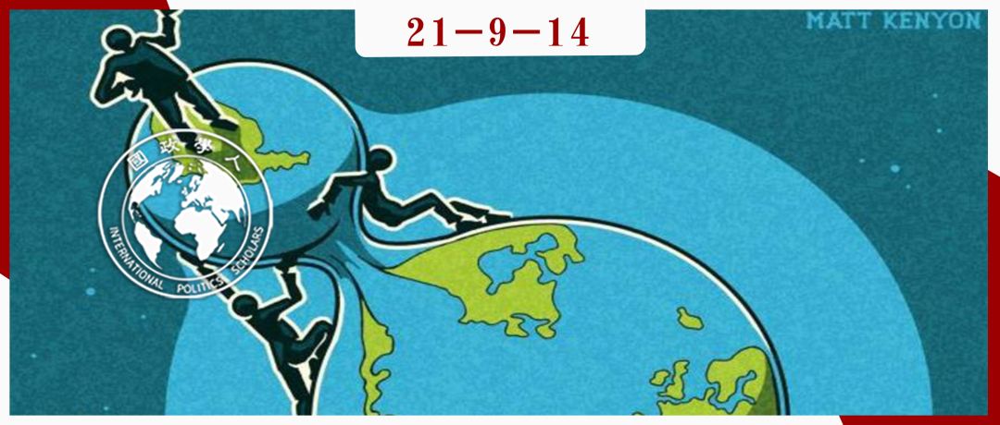

收录于合集 #理论研究 96个

作品简介
作者： Norrin M. Ripsman，康考迪亚大学政治系的教授，也是北伊利诺伊大学政治系的客座教授，于1997年在宾夕法尼亚大学获得政治学博士学位。他的主要研究方向包括：战后缔造和平、构建地区稳定、民主国家外交安全政策的国内根源、缔造和平的政治经济学、全球化对国家安全的影响以及新古典主义现实主义。
编译： 孟晓宇（国政学人编译员，山东大学东北亚学院硕士）
来源： Norrin M. Ripsman, Globalization, deglobalization and Great Power politics, International Affairs, Volume 97, Issue 5, September 2021.
归档： 《国际关系前沿》2021年第9期，总第36期。

导读
商业自由主义者认为，经济相互依存降低了国家之间发生冲突的可能性，这在很大程度上是一种适用于双边关系的论点。然而全球化和安全理论家却认为，全球化下的经济相互依存可以对整个国际体系产生安抚作用。换言之，全球化应该是全球安全的福利，并应促进大国之间的合作或至少缓和大国间的竞争。因为它们的经济完全依赖于全球经济，而激烈的竞争可能会损害其经济，而且全球化也为大国竞争提供了额外的非军事途径。此外，该论点还暗示最近的“去全球化”现象有可能点燃大国之间更激烈的竞争，因为它将削弱经济对竞争的牵制作用。
作者调查了过去40年的经济和战略趋势，以评估商业自由主义框架是否可以很好地解释这些趋势。作者得出结论： 对冷战后安全环境进行肤浅的商业自由主义解读是具有误导性的。 实际上，全球化和大国关系之间的关系比上述解读要复杂得多。首先，20世纪90年代以及21世纪初的激烈全球化并不是缓和大国紧张局势的原因。相反，冷战结束和单极体系的出现使安全局势得到改善，而全球化本身正是这种良好安全局势的产物。其次，虽然全球化有助于加强美国与中国等新兴国家之间的合作，但它也造成了大国间紧张局势加剧的问题。最后，“去全球化”似乎并非美国和中俄两国之间紧张局势不断加剧的主要原因。因此，商业自由主义无法对当代安全环境做出令人信服的解释，结构性因素以及民粹主义政治压力更能有效地诠释大国安全动态。
话虽如此，地缘经济环境对大国关系而言远非无关紧要，地缘经济环境本身受到大国政治的影响，虽然它不能决定大国政治，但它是大国关系合作和竞争的中介。
主要内容
01
全球化没有导致大国合作
若要证明全球化是大国克制与合作的首要原因，则需证明大规模的经济交流和全球经济一体化先于上世纪90年代和21世纪初大国紧张局势的缓解和大国合作的加强。
大国克制是什么时候开始的？
为了评估全球化是否是大国克制的主要原因，首先需要确定这种克制是从什么时候开始的以及什么时候克制取代竞争成为大国互动的主要模式。作者认为有两种可能性： 一种是苏联总书记米哈伊尔·S·戈尔巴乔夫(Mikhail S.Gorbachev)开始对苏联内外政策进行重大改革后的20世纪80年代中期，起点可能是1986年。 当时戈尔巴乔夫的改革开始缓和冷战，除了他标志性的经济改革和更大的政治开放之外，戈尔巴乔夫还在苏联外交政策中启动了一项“新思维”计划，旨在减轻苏联经济的压力，降低核战争的风险。在接下来的三年里，超级大国们采取措施缓和并最终结束了冷战。
另一种是苏联解体后的90年代初。 20世纪90年代展现了不同程度的大国克制甚至合作。1991年的海湾战争代表着与冷战竞争的戏剧性决裂；虽然1999年以美国为首的对科索沃的干预开始使美国与俄罗斯和中国的关系变得紧张，但在2001年9·11恐怖袭击之后，世界主要国家最初都联合起来进行反恐。从1991年到介于1999年科索沃干预与2003年伊拉克战争爆发前的某个时间点，大国关系相当克制，甚至有些合作。
在这两个起点之间进行选择是一个方法论问题。选择过早的起点可能会低估全球化的影响，而选择一个过晚的起点可能会使结论偏向于商业自由主义，因为它可能会将因果重要性归因于真正的变革时刻之后发生的经济变革。为了避免这些陷阱，作者将考虑是否有证据表明在1986年和1991年这两个拐点之前，世界经济都已经大幅全球化。
如何衡量全球化？
全球化指的是“社会经济和社会政治活动在国际和跨国范围内超越国家范围的扩展”，由于各国经济日益融入全球市场，所以其最突出的形式是经济全球化。如果全球化先于大国合作并导致大国合作，我们需要看到主要大国及其联盟在大国紧张局势缓解之前已经实现经济全球化的证据。
然而以下数据并不能支持全球化先于大国合作并导致大国合作的论断。第一，贸易指标表明，直到20世纪90年代冷战结束后，全球化才真正起飞。根据世界银行的统计，1980年至1985年间，全球商品出口持平。随着冷战开始缓和，全球贸易开始攀升，到1990年几乎翻了一番。从冷战结束到2008年全球金融危机，除1998年和2001年这两年外（美国遭受基地组织恐怖袭击的年份），世界商品出口每年都在增长，超过16万亿美元，增长470%。第二，全球化经济的阶梯式跃升也是在90年代才发生的。1983至1994年间，全球贸易占世界国内生产总值的百分比保持在略低于28%(1987年)到略高于30%(1984年)之间。然而从1994年起，这一数字每年都在飙升(1998年和2001年除外)，到2008年达到近51.5%。第三，除了全球贸易和投资外，世界主要国家及其联盟也并没有在大国紧张军事缓和之前共同实现全球化。在1975年至1989年期间，西方贸易体系内已实质性地“全球化”；而东欧集团（华沙条约组织国家）直到上世纪90年代冷战结束后才实现了经济全球化。
由此，几乎没有证据表明全球化出现在大国合作之前，或全球化导致了大国间的克制与合作。相反，全球化在很大程度上是冷战后世界战略稳定的结果，而不是导致大国合作的原因。 只有在冷战安全竞争结束后，经济交流才能真正全球化。
02
全球化与稳定之间的复杂关系
以上结论并不意味着全球化对大国关系没有影响，但它的效果有些矛盾。在某些方面， 全球化创造了维持自由秩序的激励措施，特别是相对自由的贸易、世贸组织等自由经济机构以及联合国等监管大国竞争的国际机构，以确保其承诺的经济利益。
大国政治受到相对实力的制约，这使得经济增长率变得至关重要。在全球化下，新兴国家需要调整它们的政治、经济和社会，以使其在经济开放中获利。事实上，这是克林顿政府扩大战略的自觉意图，该战略寻求扩大民主和自由经济交流的区域，以促进更稳定的战略环境。
尽管全球化有这些稳定作用，但也有意想不到的后果：首先， 它的输家试图挑战自由秩序。 全球化的一个重大副产品是经济不平等加剧，这在国内和国际上都引发了不满。因为全球化使大量工厂关闭和工作岗位减少，美国奄奄一息的制造业工人，特别是处于所谓的“锈带” (rust belt，指工业衰退的地区)的工人，迫切希望阻止全球化的浪潮；出于对政治全球化的不满，英国反对者认为政治全球化削弱了英国的经济和政治自主权，导致了英国脱欧运动的诞生。这些压力并不局限于个别国家，在世界各地，那些认为全球化正在加剧不平等、侵蚀劳工标准、环境条件、当地工业或传统价值观的人，开始动员起来遏制这只不守规矩的野兽。其次， 以西方为导向的全球化性质也让其它大国感到不安。
**
**
03
“去全球化”不是安全竞争加剧 的主要原因
“去全球化”不是大国安全竞争加剧的主要原因，甚至在“去全球化”之前，大国合作就开始受到各种因素的侵蚀，包括对美国外交政策冒险主义的反对，以及美国承担维持该体系成本的意愿下降。
如果全球化是经济、政治和社会活动超出民族国家范围的扩张，那么“去全球化”就意味着减少全球交流，并重新确立国家对商业、政治和社会事务的控制。“去全球化”始于从G7、世界银行(World Bank)、国际货币基金组织(IMF)和世贸组织(WTO)等新自由主义机构手中夺回国家对经济和政治事务的控制权的呼声。它最有力的表现包括：欧盟内部的希腊债务危机、难民跨越申根地区的开放边境和英国脱欧现象引发的轩然大波，以及在美国产生的特朗普 “美国优先”外交政策。
然而，早在全球化遭到冲击之前，部分国家就开始严重反对美国外交政策的方向。 首先，不受遏制的美国霸权损害了部分国家的利益。例如，美国在2003年不顾联合国和北约内部的反对，发动伊拉克战争；以美国为首的北约扩张令俄罗斯认为与华盛顿合作是危险的。其次，美国实力正在衰退，其在二十一世纪立于不败之地的神话亦正在破灭。2001年9月，基地组织(Al- Qaeda)对象征美国经济至上的世贸中心(World Trade Center)和象征美国军事至上的五角大楼(Pentagon)发动了大规模袭击。尽管以美国为首的联盟在阿富汗和伊拉克快速地赢得了战争，但在接下来的几年里，他们未能给这些国家带来秩序。2008年的金融危机最终导致美国国防开支大幅下降，进一步证实了美国不再像冷战结束以来那样，看起来无所不能。最后，维护该体系的成本是高昂的，美国所面临的经济困难使其支付成本的意愿不断下降。由于美国面临经济逆风，要求优先考虑本国公民医疗保健和减轻经济危机影响的国内压力越来越大。 此外，另一个阻碍大国合作的因素是关键国家出现了民粹主义和（或）民族主义领导人，他们把国家目标放在首位，并贬低全球自由秩序。
“去全球化”很可能会加速安全秩序的瓦解。随着跨国商业和投资的枯竭，无论是由于保护主义还是流行病，新兴国家将没有更多的经济动机来约束自己。但大国之间的不和先于全球化的倒退，其主要是地缘战略造成的， 将大国之间日益激烈的竞争归因于“去全球化”是不正确的。
04
对地缘经济环境与大国关系的再思考
如果经济环境没有驱动大国关系，但也不是完全无关。也许将国际经济体系理解为大国竞争发生的地缘经济环境能够更好地描述两者之间的关系。地缘经济环境可以影响大国竞争的性质，可以放大或抑制竞争与合作，但不是大国关系的主要驱动力。由于全球化，大国的竞争方式有所不同。在全球化条件下，当地缘战略环境促进竞争时，大国不太可能回避竞争，但或许会选择软平衡（soft balancing）手段。相反，在“去全球化”条件下，更激烈的权力竞争没有了限制，大国会使用更多传统手段。
当然，如果地缘政治环境促进更大的克制——例如在单极、积极的霸权接触和霸权克制的条件下——即使在“去全球化”的世界里，也会抑制(但不是消除)竞争。但在全球化的条件下，它会有更强烈的动机去抑制竞争并加强合作。
05
结论
随着后冷战世界相对稳定性的消散，我们正走向更加不确定、更危险的时代。美国的主导地位受到侵蚀，取而代之的是一个更加多极的框架，这将导致一个更加动荡的国际体系。作为一个过度扩张的大国，美国可能会越来越多地退出其领导角色。
然而这些变化并不是由全球化的崩溃带来的。自20世纪40年代和90年代以来在西方和全球存在的自由经济秩序似乎是更广泛的政治和地缘战略变化的牺牲品，而不是催化剂。但尽管如此，经济关系确实会影响大国竞争的性质和方式。因此，如果“去全球化”持续下去，我们可以预期它将改变和加剧大国竞争，并看到竞争越来越多地从软平衡转向使用更强硬的权力政治工具。
译者评述
本文作者重点论述了“全球化”“去全球化”以及“大国政治”之间的关系，其认为全球化并不是导致大国克制与合作的首要原因。而相反，全球化却是大国关系缓和后的产物。但是全球化与大国关系进程并非完全无关，它有助于推动各国采取低烈度的竞争与对抗形式。而去全球化虽不是导致大国间关系紧张的罪魁祸首，但相对于全球化趋势，去全球化会进一步加剧大国间的对抗烈度。
作者的观点新颖，通过大量的经济贸易数据有力地驳斥了商业自由框架对大国关系发展趋势的解释力。从作者的结论中我们似乎可以得出这一推断：经济手段无法完全解决政治问题，随着全球化的退潮，经济要素对国际关系的影响在逐渐衰退。自二战以来，经济要素对大国关系的影响与日俱增——经济关系成为大国间关系的主要内容，经济手段成为影响国际关系的主要方式，经济实力成为衡量国家权力的重要来源与组成部分。总体而言，国际行为体间的经济相互依赖有效地限制了大国政治在现代国际体系中的主导权。然而事实表明，无论全球化实现了怎样高水平的发展，政治要素对国际关系的影响始终存在。且随着去全球化浪潮的来袭，全球经济联系受到单边主义、贸易壁垒以及民粹主义的剧烈冲击。在未来，或许政治要素的影响力会逐渐复兴，政治手段在大国关系中会被更加频繁的运用。
词汇整理
安抚效果 pacifying effect
霸权克制 hegemonic restraint
去全球化 deglobalization
经济相互依存 economic interdependence
审校 | 阮镇炜 尤力
排版 | 云骐布日 屈媛媛 梁羽
文章观点不代表本平台观点，本平台评译分享的文章均出于专业学习之用, 不以任何盈利为目的，内容主要呈现对原文的介绍，原文内容请通过各高校购买的数据库自行下载。

国政学人
支持学术公益与知识传播
微信扫一扫赞赏作者 __赞赏
已喜欢，对作者说句悄悄话
取消 __
发送给作者
发送
最多40字，当前共字
上一页 1/3 下一页
长按二维码向我转账
支持学术公益与知识传播
受苹果公司新规定影响，微信 iOS 版的赞赏功能被关闭，可通过二维码转账支持公众号。